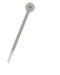

Rock Alternativo • Sonido Vintage
Mateo Rivas
Voces rasgadas, guitarras intensas y alma de carretera. Bienvenido a la primera versión del sitio oficial de un joven artista que convierte cada escenario en una historia inolvidable.
Ver Tour Europa
Haz click en el vinilo para comenzar. Cada click cambia canción y disco.
Sobre mí
Nací entre calles de barrio y parlantes viejos que sonaban más fuerte de lo que debían. A los 14 años escribí mi primera canción en una libreta gastada, y desde entonces no dejé de cantar.
Mi historia empieza en pequeños bares donde tocaba frente a diez personas, pero con la misma entrega que en un estadio. Cada caída, cada viaje en bus y cada madrugada de ensayo fue moldeando una voz honesta: cruda, melódica y profundamente rockera.
Hoy quiero que esta música llegue más lejos. Esta web es el primer paso para compartir mi talento con quienes buscan canciones que se sientan reales.

Trayectoria
Conciertos que marcaron mi camino y me conectaron con públicos de distintas culturas.
- 2022 · Argentina Gira en Buenos Aires, Córdoba y Rosario.
- 2023 · México Presentaciones en Ciudad de México, Guadalajara y Monterrey.
- 2024 · Chile y Colombia Festivales en Santiago, Valparaíso, Bogotá y Medellín.
- 2025 · España Primer sold out en Madrid y show especial en Barcelona.
Próximas presentaciones
Tour Europa 2026: una ruta de escenarios históricos, clubs underground y festivales para llevar el nuevo repertorio al máximo nivel.
- Londres, Reino Unido · 15 de junio · Electric Ballroom
- París, Francia · 21 de junio · Le Trianon
- Berlín, Alemania · 27 de junio · Columbia Theater
- Ámsterdam, Países Bajos · 2 de julio · Melkweg
- Roma, Italia · 9 de julio · Atlantico Live
- Madrid, España · 16 de julio · La Riviera
URL de compra: https://www.ticketmaster.es/